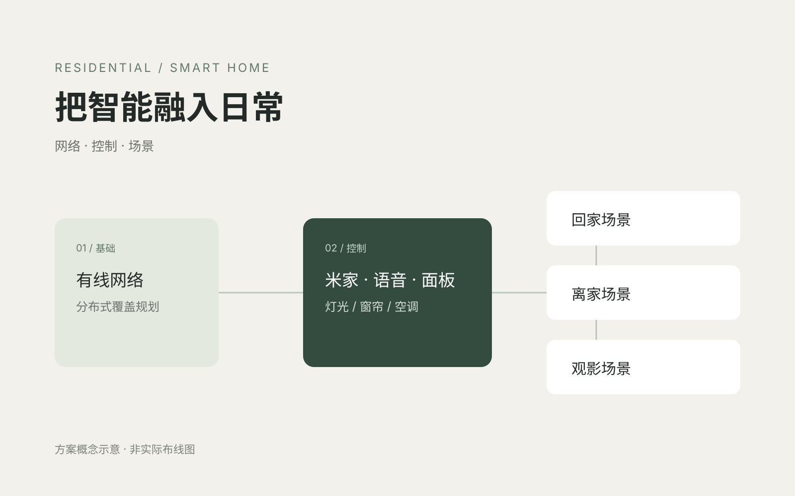

把智能融入日常
以有线网络为基础，统筹灯光、窗帘与空调控制，把回家、离家和观影等日常需求纳入同一套场景设计。
- 案例类型
- 住宅 · 米家生态
- 展示内容
- 方案设计 + 空间实景

三个设计重点。
先把网络打好底
方案采用有线组网与分布式路由，结合房间使用需求规划网络覆盖。
让控制方式统一
通过米家、语音与墙面面板，规划灯光、窗帘和空调的统一控制。
围绕生活设计场景
将回家、离家、观影等需求转为联动逻辑，并纳入感应设备辅助控制。
空间里的细节。
实景照片展示空间与可见设备；具体自动化功能以实际调试与验收为准。